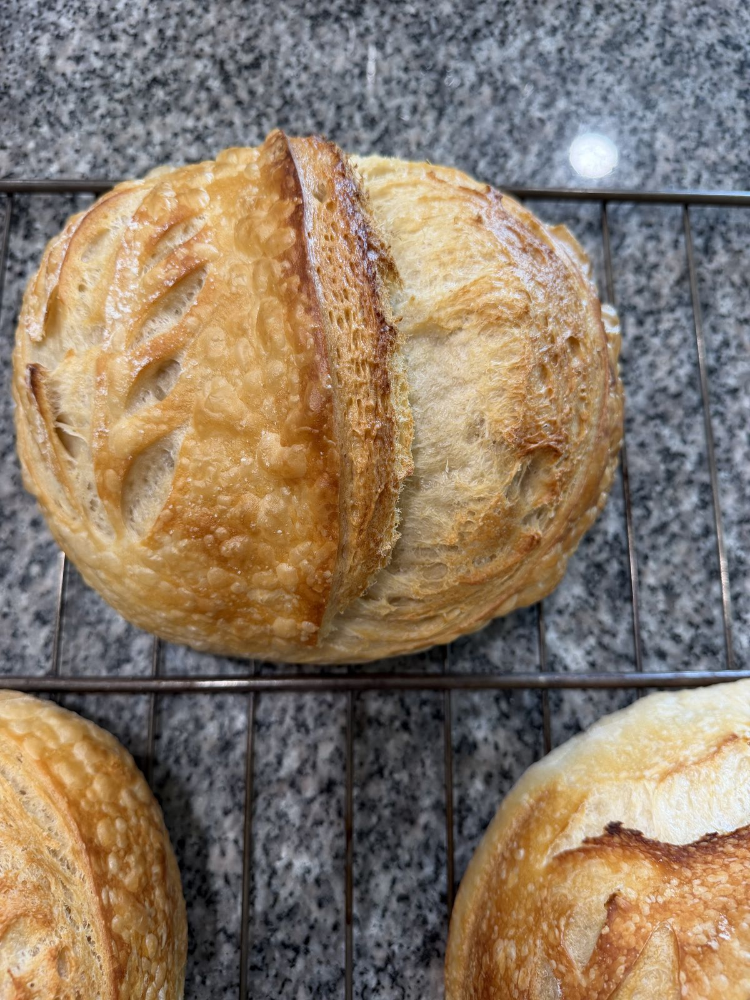

Three days, seven steps, one loaf
There's no shortcut version of real sourdough. Here's exactly what happens between feeding the starter and pulling a loaf out of the oven.

Fresh Off the BakeWhy we ferment for 48 hours
Commercial yeast can proof a loaf in two hours. Our wild starter takes closer to two days — and that difference is where the flavor, digestibility, and crust all come from. It's slower, less predictable, and worth it every time.
The full bake, step by step
Feed the starter
Our starter has been fed daily for over ten years. It's the only leavening agent in any Forest Haven loaf — no commercial yeast, ever.
Mix & autolyse
Flour and water rest together before salt and starter are added, letting the grain hydrate fully for better structure and flavor.
Bulk ferment
The dough rises slowly at a cool room temperature, with a series of gentle folds to build strength without overworking it.
Shape
Each loaf is hand-shaped and placed in a proofing basket to hold its form through the final rise.
Cold proof overnight
A slow, cold proof in the walk-in develops deeper flavor and makes the dough easier to score cleanly.
Score & bake
Loaves are scored by hand and baked in a steam-injected oven for a crackling crust and an open, airy crumb.
Cool & deliver
Bread rests until fully cooled before it's boxed for the farm stand, market table, or your pre-order pickup.
See this week's bake on the menu
Every step above goes into every loaf we sell — browse what's available this week.